基本信息
VMD软件界面
VMD启动后会看到三个窗口：
- VMD Main：VMD的主窗口
- 若碰到VMDMain窗口显示不出来的情况，尝试在命令行窗口输入
menu main on。如果还不行，输入menu main move 100 100再试。
- 若碰到VMDMain窗口显示不出来的情况，尝试在命令行窗口输入
- 图形窗口：观看体系结构
- 命令行窗口：也叫Console窗口，VMD的一些状态信息、提示信息会显示在其中，并且可以在其中使用操作系统和VMD的内置命令，以及运行Td分析脚本
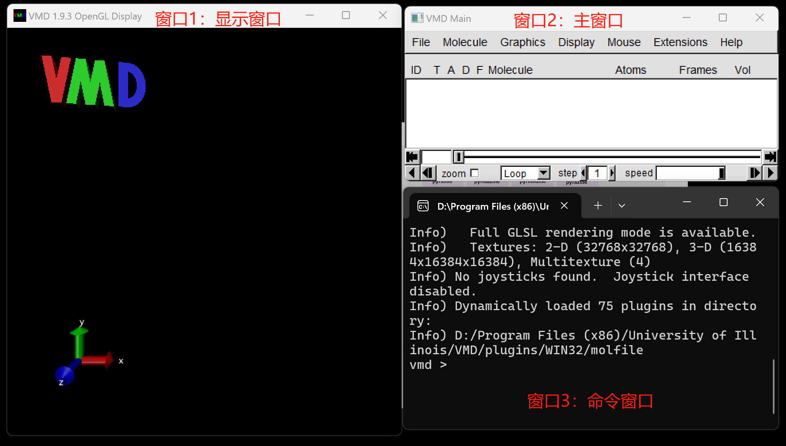
VMD main窗口
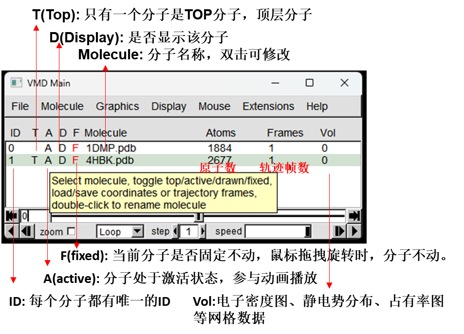
- 菜单栏下面的标题栏：
- ID：载入的每个体系自动分配唯一的ID，依次顺延
- Frames：包含的帧数
- Vol：体数据数目
- 每个体系有T,A,D,F状态，双击可以切换状态，黑色/红色对应开启/关闭。也可以在菜单栏“Molecule”中操作。
- T：代表Top。如果载入了多个体系，T在哪个上面，进度条的范围就由哪个体系决定
- A：代表Active，即允许播放轨迹
- D：代表Display，即显示此体系
- F：代表Fixed，即调整视角时保持不动
- ⇤，⇥：切换到第一帧或最后一帧
- ◀、▶：逆向播放或正向播放
- ↤、↦：向前或向后移动一帧
- Loop：轨迹播放方式
- step：轨迹播放步长
- speed：轨迹播放速度
载入结构
Windows有两种方法载入结构：
对于结构文件，可以直接把文件拖入到VMD Main窗口，文件类型会根据后缀名自行判断。
标准的载入方式是用“File(或在空白的地方点右键)-> New Molecule”，然后选择要载入的文件。
- 此时目录名不可有中文。如果没有正确判断出文件类型应当自行选择。


载入后将在VMDMain窗口产生一个新的ID。
Linux下可以用比如vmd foo.pdb在启动时直接载入文件。
载入轨迹
载入GROMACS的轨迹文件(trr/xtc)前需要先载入对应的gro或者pdb文件以提供原子信息。然后可以通过两种方式：
- “选中文件右键→Load Data into Molecular”
- 在Molecule File Browser窗口（“FIle→New Molecular”）。 确认和选择load files for：对应0：pull.gro名称； 点击 Browse 找到pull.xtc文件。 最后点击load。
- 左下角的Frames：可以设定只载入轨迹哪些帧号范围以及载入间隔
- 更好、更快的载入方式是选上 Load all at once后载入。
其他：
- 载入较长轨迹的过程中建议在Graphics - Representation中把默认的表示取消显示，这样会显著加快载入速度。
选中文件右键：
- Rename：修改体系名称。默 认名是一开始载入的文件的路径名
- Delete Frames：可以将轨迹中指定范围删除，也可以指定每隔凡帧删除一次。
- Abort FileI/O：载入过程中选择此选项可以终止载入。
载入GROMACS轨迹的标准方式
- 载入gro文件，假设此时体系D=i(gro文件具体是哪个任务产生的无所谓，但里面的原子数、原子顺序需要和被载入的轨迹文件完全相同)
- 删除ID=i的仅有的一帧(即gro里的结构)
- 将轨迹载入到ID=的体系当中
图形界面载入大轨迹速度比较慢，建议通过命令行载入大轨迹：vmd em.gro md.xtc。代表载入em.gro后，再把md.xtc里的轨迹载入进去。之后应手动删除第0帧。
载入轨迹时内存不足导致崩溃的解决办法
在载入轨迹过程中，VMD的内存占用率会不断上升。当64bit版VMD的内存占用超过剩余物理内存，或者32bit版VMD占用内存达到约2GB时，VMD就会崩溃。解决办法:
- 如用的Windows 32 bit版VMD，用Linux 64 bit版VMD。
- 1.9.4测试版也有官方的Windows 64 bit版但bug巨多，1.9.3有第三方编译的Windows 64 bit版：http://bbs.keinsci.com/thread-23119-1-1.html
- 每隔一定帧数载入一帧(载入界面里通过stride设置)。内存占用量与载入的轨迹帧数成正比
- 去掉轨迹中不感兴趣的原子。例如蛋白质+水体系可以通过gmxtjconv工具去掉水分子部分后再载入
- 一次分析一部分轨迹。可以自行分割轨迹，也可以载入轨迹时通过First和Last指定载入哪部分轨迹
保存轨迹
VMDMain窗口中选中某个体系，点右键之后选Save Coordinates，可以把当前结构或者轨迹中的指定部分保存成新文件。VMD因此也能起到格式转换的作用。
常用的记录分子结构的xyz、pdb文件也可以用来储存轨迹，并且载入这样的轨迹文件前不用先载入结构文件。不过缺点是体积比较大。

从上往下：
- Save data from：保存轨迹的体系
- Selected atoms：保存的原子范围。可以用VMD的选择语句指定，填all会保存所有原子
- File type：新文件的类型
- Frames：要保存的帧号范围和间隔
5. Mouse

三个基本模式
RST：
- 旋转模式（R）,默认模式：在VMD Main->Mouse->选择Rotate Mode; 或者在Display窗口，按R或者r 进行切换。
- 平移模式 (T)：在VMD Main->Mouse->选择Translate Mode; 或者在Display窗口，按T或者t 进行切换。
- 缩放模式（S）：在VMD Main->Mouse->选择Scale Mode; 或者在Display窗口，按S或者s 进行切换。
旋转模式下（R）：
- 按住鼠标左键：上下左右自由旋转；
- 滚动鼠标中键可以进行缩放，或者缩放模式下（S）。
- 按住鼠标右键、左右拖动：垂直于屏幕旋转
平移模式下（T）：
- 按住鼠标左键：上下左右自由移动；
- 滚动鼠标中键：进行缩放；
- 按住鼠标右键：前后移动，较少使用；
缩放模式下（S）：
- 按住鼠标左、中、右键，左右移动鼠标都可以缩放，右键的幅度会更大。
恢复视图：Display -> Reset View或按=：将当前显示的对象居中
Center：C
按c键后点击一个原子：之后旋转视图绕这个原子旋转
结构的测量
Label 0123：原子、键、键角、二面角的测量和标记
- 0：激活图形窗口井按数字键0进入原子查询模式后, 点击某个原子,在文本窗口就会显示原子的各种信 息,如坐标、编号、原子名、所属残基等。
- 1、2、3：选择Mouse - Label 里的相应项目或者点键盘上相应数字键后, 点击相应数目的原子,就会把 原子、键长、键角、二面角标 注出来.距离单位为埃。
风格编辑：
- 在Graphics→Labels中，可以检阅被标记的原子的详细信息，还可以把标记的键长/键角/二面角进行作图，并且导出数据。也可以隐藏/删除标记
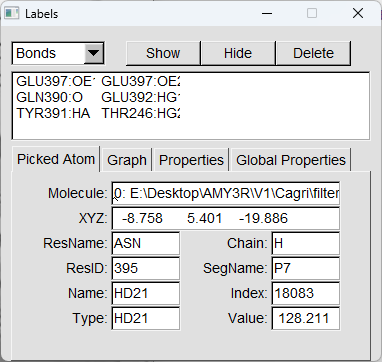
- 颜色的修改见Graphics→Colors
- VMD的一个缺点是没法显示所有原子的序号。但可以通过VMD的脚本来实现，详见卢天的脚本atmlab.fcl和博文。
播放周期性计算的轨迹时往往出现胡乱连键的现象。这是因为VMD是按照最开始载入的结构依据原子间距离判断的成键，但随着模拟进行，有的原子穿越盒子后向到另一头，成键就混乱了。解决方法：
- 用
gmx trjconv命令接-pbc mol转换轨迹，使分子保持完整 - 用DynamicBonds绘制风格显示
- 命令行窗口执行
mol bondsrecalc all;mol reanalyze all，会对当前帧、所有体系所有原子重新判断成键，但只解决当前一帧的问题(all改为top可只对top体系更新)
结构的修改
VMD不是专门的建模、体系结构编辑程序，只能做简单的结构调整。
Move 5678：
- 在Mouse-Move菜单中选择相应项目，或者直接按键盘上的相应数字键，然后点击原子进行拖动，可以平移相应部分。
- 如果按住shif键后进行拖动，则可以旋转相应部分。
点击Add/Remove Bonds后再点击两个原子，可以使它们成键或取消原先的键连。
3. Graphics
Labels
- 选择Graph：可以选择项目后，勾选show preview，可以预览键长键角的变化，还可以Save导出为文本文件。
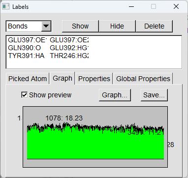
标签尺寸、粗细、颜色、相对于原子核位置都可以调。

- 标签里的属性：
- %a：atom name
- %d：resid
- %i：atom index (0-based)
- %1： atom index (1-based)
- %e：atomic element
- %b：beta
- %c：chain
- %C：conformation
- %f：user-applied force
- %F：current trajectory frame
- %m：mass
- %n：molecule index
- %N：molecule name
- %o：occupancy
- %p：atom periodic element number
- %q：atom charge
- %R：resname in upper-case
- %1： 1-char resname in upper-case
- %r：resname in camel case
- %s：segname
- %t：atom type
- %T：physical time
- %x, %y, %z
- 标签里的属性：
Representation
界面介绍
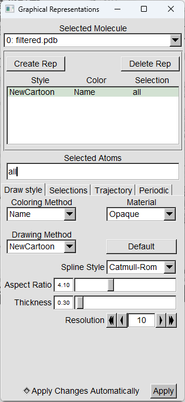
- Selected Molecule：选择哪个ID设定显示方式
- Create Rep：创建新的表示 (Representation) ，可创建无数多,效果会叠加
- Delete Rep：删除当前表示
- Seleted Atoms：被选择的原子
- Coloring Method：着色方式
- Material：材质
- Drawing Method：绘制风格
- 后面是不同绘制风格的具体设定
- Apply Changes Automatically：调整设定后立即见效，默认为开启
Drawing Style选项卡
常用着色方式
- Name：按照原子名着色
- Element：按照元素着色
- ResName/Type/ID：按照残基名、残基类型、残基序号着色
- Chain：按照链名着色
- Secondary Structure：根据二级结构着色
- ColorID：直接指定颜色ID
Beta：根据pdb的B因子(beta字段)数值着色。
- 默认色彩刻度是红-白-蓝，即越红的地方结构刚性越强，越蓝柔性越大，容易运动。
Position：根据x/y/z或径向坐标大小着色
- Fragment：根据所属片段着色
- Index：按照原子序号着色
- Backbone：将蛋白质骨架和侧链分开着色
- Volume：按照格点数据的数值着色
常用绘制风格（Trace到NewCartoon专门用于显示蛋白质、核酸）
- Lines：用细线描绘结构，显示速度最快
- Bonds：用空心圆柱显示化学键
- DynamicBonds：同上，但是不是根据VMD在载入分子结构时对成键的判断来显示，而是根据当前坐标实时判断成键
- HBonds：虚线显示体系中的氢键(不管是什么原子，带着氢的就被视为氢键给体原子，不带氢的就被视为氢键受体原子)
- Points：用圆点显示原子
- VDW：将原子用范德华球描绘
- CPK：用球棍方式显示
- Licorice：很常用，比Bonds更好看，因为键的末端是半圆型封闭的
- QuickSurf：快速方式显示分子表面
- VolumeSlice：显示格点数据的截面图
- Beads：相邻原子一起用较大圆球显示
- Isosurface：显示格点数据等值面图
- NewCartoon：
- 注意：载入轨迹后，在哪帧选择NewCartoon等展现体系二级结构的模式，就会调用STRIDE程序计算哪帧的二级结构。之后即便切换到别的帧，二级结构还是用之前算的那帧的。
- 若想令每一帧的二级结构都根据相应结构来计算，可以使用卢天的
sscache.tcl脚本- 拷到VMD目录，然后运行source sscache.tcl。之后运行诸如
start_sscache top，就代表top体系每切换到新的一帧就重算二级结构信息。如果此帧已经算过了就不再重算了。 - 运行
stop_sscache [ID号]则可以停止实时更新。 - 若只想更新top体系的当前帧的二级结构，运行
mol ssrecalc top。用 - s
tart_sscache之后，可以播放一遍轨迹，这样每一帧的二级结构就都被计算并储存在内存里了，此时播放轨迹比较慢，而之后再次播放轨迹就很快了。
- 拷到VMD目录，然后运行source sscache.tcl。之后运行诸如
材质设定：在Representation界面下可以对各种表示设定材质。每种材质实际上是各种参数的预设的组合，可以在Graphics-Materials…里面自行调节。
- 对于Transparent等显示方式，必须把GLSL打开方可如实看到材质的真实效果!GLSL需要在Display-Rendermode中选择。如果GLSL不可选，说明VMD和显示驱动可能有兼容性问题。
Selection 选项卡
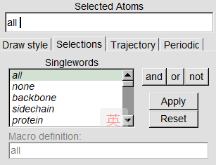
Singlewords中双击可以使用，Apply是应用选择语句，Reset是清空选择语句，Macro definition是具体的定义
- all：所有原子
- none：无原子
- noh：氢以外的原子
- ion：离子
- water：水
- backbone：生物大分子骨架
- sidechain：生物大分子侧链
- protein：蛋白
- nucleic：核酸
- helix：螺旋
- alpha_helix：alpha螺旋(是helix中的子集，较长一段螺旋才算)
- sheet：折叠
- turn：转角
coil：盘绕
alpha：蛋白质的alpha碳
- acidic：pH=7时带负电氨基酸
- basic：pH=7时带正电氨基酸
- charged：acidic和basic的并集
- neutral：电中性氨基酸
- polar：极性残基
- hydrophobic：疏水性残基
- bonded：成键的原子
- hetero：非蛋白质和核酸的部分
- carbon, hydrogen, oxygen,nitrogen、sulfur：相应元素
还有些关键词是需要后面接具体参数的，如name CA、x>5。在此窗口中可以看到对于当前体系可以接的参数。
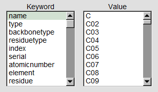
- name：原子名
- index：原子序号(从0开始)
- serial：原子序号(从1开始)
- type：原子类型
- element：元素名
- resname：残基名
- residue：残基编号，从O开始
- resid：残基编号，从1开始。若结构文件里有残基号则与之一致
- chain：链名
- fragment：片段编号。VMD在载入结构时会对每个键连的片段设定一个编号
- numbonds：成键数目
- structure：二级结构
- x,y,z：X/Y/Z坐标
- vx，vy，vz：X/Y/Z速度
- beta：pdb文件中的beta值
- mass：原子质量
- charge：原子电荷
范围选择语句基本语法
- 可以用
()或{}指定语句处理的优先顺序 - 对
双引号内的字符可以使用正则表达式。 - 用
单引号则里面的字符可以避免被转义 - 判断语句：
<、<=、=、>=、>、!= - 与、或、非：
and、or、not - 函数：sqr(平方)、sqrt(开根号)、abs、sin、cos、tan、atan、asin、acos、 sinh、 cosh、tanh、exp、 log、 log10
运算符：
+、-、*、1，也可以用^或**来表示多少次方within 5 of AAA：距离AAA 5埃以内的原子。用pbwithin则考虑周期边界条件exwithin 5 of AAA：同上，但不包含AAA自身withinbonds 2 of AAA：距离AAA≤两个键的原子same p as AAA：与AAA选区的p属性相同的部分ringsize 5 from AAA：处于AAA中五元环上的原子maxringsize 6 from AAA：处于AAA中≤六元环的原子
例子：
范围选择语句实例
Chain B：B链的原子numbonds=2：形成了两个键的原子index 5 to 200 210：序号在5~200内的原子以及210号原子protein or nucleic：蛋白质与核酸的原子resname ALA CYS ARG：丙氨酸、半胱氨酸、精氨酸原子backbone not helix：除了螺旋区域以外的骨架原子name CA CB或name "CA|CB"或name "C[AB]"或name "C(A|B)"：名为CA和CB的原子name"C."：名字为两个字符且第一个字符为C的原子name"CG.*"：名为CG或开头字符为CG的所有原子name"CE[1-3]"：名字为CE1、CE2、CE3的原子name "C[6-9]" or name "C[12][0-9]" or name "C3[01]"： 名字从C6到C31的原子name'O5*'：个别原子名带星号，选取时要用单引号括住resname 'CA2+'或resname "CA2\+"：带正负号的也要用单引号括住以免转义，或者括在双引号里并加上斜杠mass>5：质量大于5的原子abs(charge)>1：电荷大小超过1的原子serial%2=0：序号为偶数的原子x<6 and x>3：选择x在3~6埃区域内的一层原子x>1 and x<8 and y>24 and y<35 and z>1 and z<5：一个矩形区域内的原子sqr(x-5)+sqr(y+4)+sqr(z) < sqr(5)： 以(5,-4,0)点为中心半径5埃以内的原子((x-33)2+(y-14.5)^2)<12^2 and z<40 and z>10：选择以x=33、y=14.5埃为中心，半径为12埃，z范围在10-40埃的柱形区域x+y+z<80：斜切面内侧的原子not {oxygen and numbonds=0}：扣除孤立的氧原子(可以用于去除X光衍射pdb文件里的结晶水)within 6 of protein：距离蛋白质6埃以内的原子not within 5 of resname ADP：距离名为ADP的分子5埃以外的原子water within 5 of residue 8 to 44：距离8-44号残基5埃以内的水中的原子withinbonds 2 of index 31：距离编号为31原子的两个键及以内的原子maxringsize 6 from protein：蛋自当中所有六元及六元以下环上的原子same resname as resid 33：所有与33号残基相同名称的残基same residue as {protein within 5 of nucleic}： 与核酸的原子相距5埃以内的蛋白的原子，并且把被截断的残基保留完整x > 15 and not same fragment as {exwithin 8 of protein}：蛋白质以及蛋白质8埃范围以外的原子，保留完整片段，同时x坐标得大于15埃
选择范围的更新：
使用诸如x<20这样的涉及到空间范围的选择语句时，原子是在刚输入此命令时候按照指定规则选定的，之后不会随着帧号的改变而更新。只有选择Update Selection Every Frame后才会在播放轨迹时每一帧都重新按照指定规则确定被选择的原子。当取消这个选项后，选定的原子范围将维持在最后一次更新的情况。
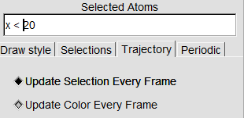
Periodic
显示周期镜像：
Graphics - Representation界面中可以点击Periodic标签页的相应复选框来将相应方向的镜像盒子显示出来。
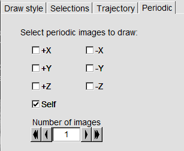
Color
Graphics-Colors里面可以对颜色进行自由的设定，比如背景色、对每种元素/残基/二级结构等等的着色(必须着色方式选了相应项才能看到效果)
修改背景颜色：
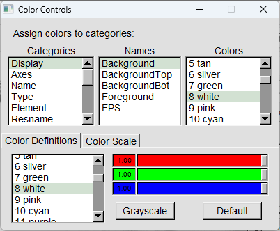
如果希望默认就是白背景，在vmd.rc最后加入
color Display Background white
4. Display
景深效果
VMD默认开启景 深效果,会把靠屏幕越远的区 域券化得越厉害。如果嫌图像被搞得雾蒙蒙. 可以点击 Display - Depth Cueing把默认的景深 效果关闭。
在Display-Display Settings中恰当设定雾化范围可以突出主体而避免背景原子扰乱视觉
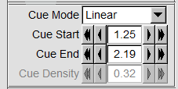
透视效果
在Display中可以选择Perspective(透视)与Orthographic(正交视角)。默认前者，后者对于考察生物膜等界面体系比较适合，可避免视觉误差。
Display Settings
视图裁剪
在Display - Display Settings中可以设定距离屏幕多远以外，以及多近以内的内容被剪掉。
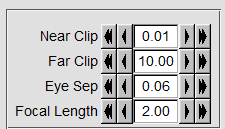
使用自带的Extensions - Visualization -Clipping Plane Tool插件可以同时设多种裁剪方式，而且裁剪方向可以自定义。
- 使用Tachyon、POV-Ray渲染时Display Settings设的Clipping效果不生效，但通过Clipping Plane Tool做的设置生效
6. Extension
Analysis
Contact Map
- Cale. res-res Dists：计算残基之间 Alpha碳的距离
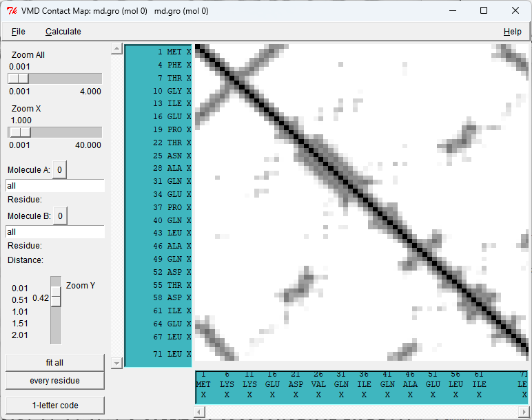
Hydrogen Bonds

- Input Options
- Update selections every frame?：当选区不需要动态更新取消选择以节约时间
- Only polar atoms (N, O, S, F)?：只考虑极性原子，诸如C不被考虑
- Selection 1 is the: 选择Both，选区1、2中的残基都可以当氢键给体和受体
- Donor-Acceptor distance (A)、Angle cutoff (degrees):氢键判据
- gmx hbond角度判据为30度时，实际上对应VMD的氢键判据为43.1度。
- Calculate detailed info for:
- All hbonds:残
键都考虑
基之间每一对氢 - Residue pairs:残基间若有多个氢键时只计一次
- Unique hbond:按照原子对来统计残基间的氢键
- All hbonds:残
- Output options
- 绘制功能有bug，不选
- Write output to files?：默认产生在VMD目录下
输出：
hbonds.dat：各个时刻形成氢键的数目
hbonds-details.dat：dat记录了所有出现过的氢键。比如选择All hbonds：
1
2
3
4
5
6Found 4 hbonds.
donor acceptor occupancy
MOL243-Side GLY214-Main 62.75%
MOL243-Side ASP189-Side 155.98%
MOL243-Side SER190-Side 28.09%
MOL243-Side CYS215-Side 0.20%occupancy相当于在所选轨迹范围中，在给体和受体残基之间每一帧出现的平均氢键数目。
如果选择uniquebond，则会得到原子级别的细节
1
2
3
4
5
6
7
8Found 6 hbonds.
donor acceptor occupancy
MOL243-Side-N9 GLY214-Main-O 62.75%
MOL243-Side-N9 ASP189-Side-OD2 75.70%
MOL243-Side-N8 ASP189-Side-OD1 76.89%
MOL243-Side-N8 SER190-Side-OG 28.09%
MOL243-Side-N8 ASP189-Side-OD2 3.39%
MOL243-Side-N9 CYS215-Side-SG 0.20%
Ramachandran Plot
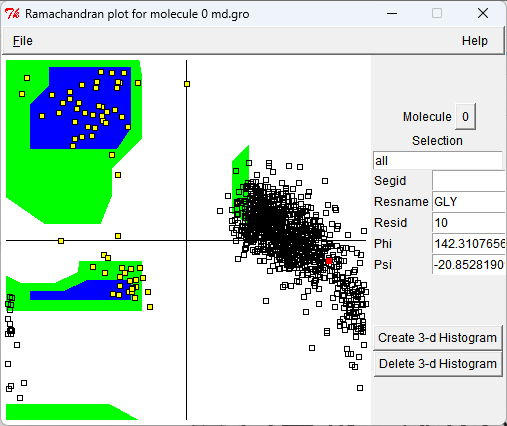
- 此工具不是把所有残基所有帧的点同时叠加绘制。拉动进度条，则会绘制相应帧的rama图。
- 点击一个黄点成为红色，界面右侧就会显示对应的残基，并会用黑框把所选的这个残基的所有帧的点全都绘制出来。点击相应的黑框可以切换到相应帧。
- 如果点击红点，则会恢复默认状态。
RMSD Trajectory Tool
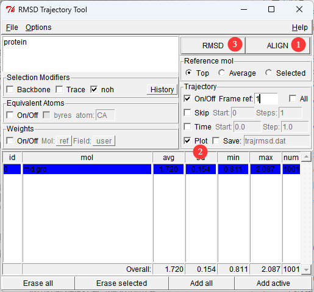
- protein：选区语句定义要计算RMSD的组
- Selection Modifiers→noh：不考虑氢
- weights →on/off： 不考虑质量（或其他原子属性）权重
- Trajectory：
- Save：勾选后再RMSD，VMD目录下将会产生指定的.dat文件，记录各锁的RMSD值
Salt Bridges
可以搜索出体系中所有正电残基(对应resname ARG HISLYSHSP)和负电残基(对应resname ASP GLU)之间的盐桥。
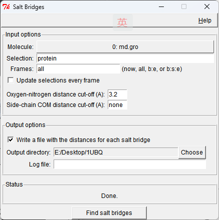
- Update selections every frame：对于选区语句不含几何范围的情况，可取消选项以加快搜索速度
- Side-chain COM distance cut-off (A):侧链质心距离阈值
- Write a file with the distances for each salt bridge：是否把每个找出来的盐桥距离随时间变化写入到独立的文件中
仅当选定的轨迹范围中负电残基的任意一个氧与正电残基的任意一个氮之间的距离小于过指定值时才会被判断为盐桥。另外还可以额外要求侧链质心距离必须小于过多少。
- 每个找到的盐桥都在VMD目录下输出了对应的文件，如saltbr-ASP21-LYS29.dat.其中记录的残基间的距离定义为正电残基侧链氮的质心距离与负电残基侧链的氧的质心距离。
Sequence Viewer
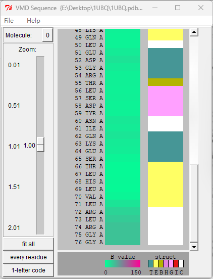
- 利用VMD的Extensions-Analysis-Sequence Viewer可以查看氨基酸序列。点击哪个氨基酸，图形窗口中哪个氨基酸就会以黄色高亮显示，也可以鼠标圈住一次选一批。
- 左图颜色越缘的残基B因子越小。
二级结构颜色对应的含义：
- T：Turn
- E：Extended conformation
- B：solated bridge
- H：Alpha helix
- G：3-10 helix
- I：Pi-helix
- C：Coil (none of the above)
Timeline
利用VMD还可以绘制每个残基的RMSD来考察对总RMSD的贡献。
在VMD中将轨迹叠合后，Appearance - Color scale - Rainbow (BGR).然后选Calculate-Calc.RMSD开始计算
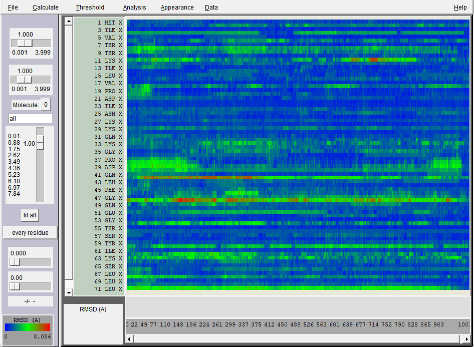
对于图中一些感兴趣的区域，可以用鼠标右键拖动放大。
并且可以用鼠标左键点击某个点高亮之，图形窗口就会切换到相应帧，并且将对应的残基显示出来，而且在窗口左下角显示具体信息。如果用左键在色彩条上滑动，还可以观看对应残基在对应轨迹区间的运动。
恢复完整视图点fit all按钮
图上点右键可以缩小视图
点击高亮处可以取消高亮
Calc. Phi/Psi:计算各残基Phi/Psi角度随时间的变化
- Calc. delta Phi/Psi:计算各残基Phi/Psi角度相对于第一帧时的变化
- Calc Sec. Struct.：绘制二级结构随时间变化
- Calc. SASA：计算所有残基的SASA随时间的变化
Visualization
Bendix
计算螺旋不同位置弯曲程度的插件，并且可以把螺旋不同位置的弯曲程度用不同颜色直观展现出来。
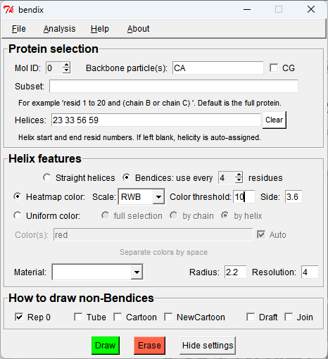
Helices框如果留空的话会自动判断螺旋涉及的残基，如果有自己不想要的区域可删除。
在当前RWB色彩刻度下，越蓝的区域弯曲程度越低，越红的区域弯曲程度越高。白色代表略微弯曲。
点击Analysis -Plot: Angle along helix,会将识别出的螺旋上不同残基处的螺旋弯曲度数绘制出来(对于当前帧而言)
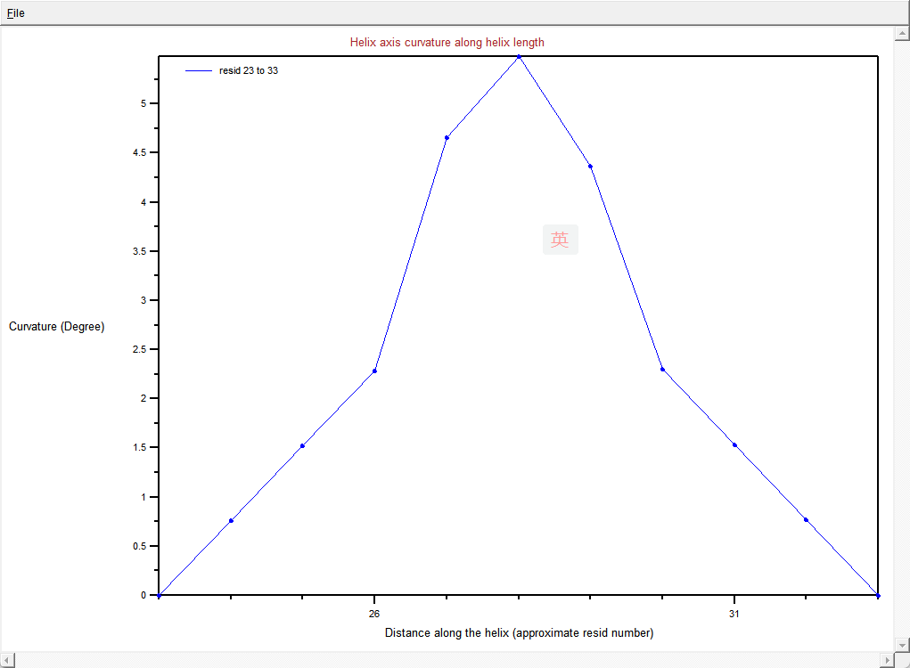
如果想考察螺旋的最大弯曲角随模拟时间的变化，应依次点击以下选项将各帧螺旋信息在轨迹播放过程中存到内存里
选择储存数据
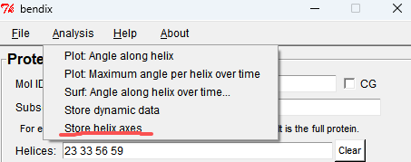
切换初始帧
选择Once
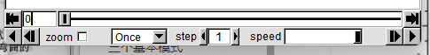
完整播放一遍轨迹
绘制
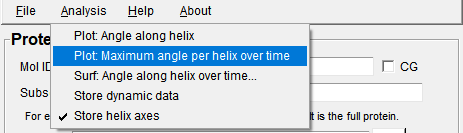
Clipping Plane Tool
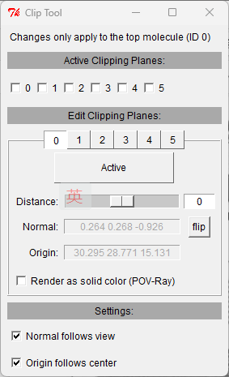